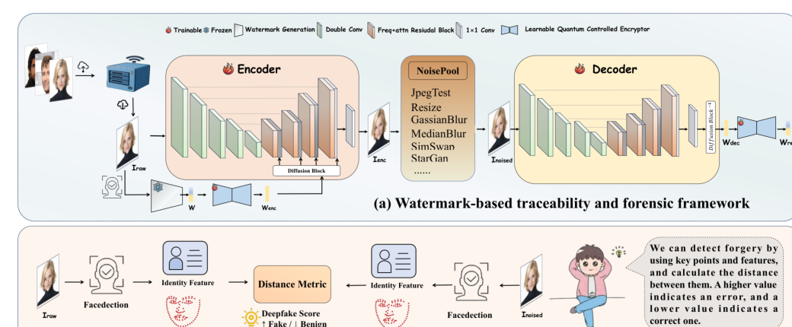

Dual-Rule Watermarking with Facial Features of Topological and Semantic for Deepfake Proactive Defense
IEEE Transactions on Circuits and Systems for Video Technology (TCSVT), 2026.
- Constructs a meaningful dual-rule watermark from facial topological constraints and semantic attributes.
- Integrates learnable quantum-inspired encryption with frequency-aware and multi-attention watermark embedding.
- Uses feature consistency to support provenance verification and Deepfake detection.